이 글은 전체 2편 중 2편입니다. 긴 영상을 주제 흐름에 맞춰 나누어 정리했습니다.
채널: AI Frontier Korea (노정석) | 길이: 58:05 | 날짜: 2026-06-29
이 글은 전체 2편 중 2편입니다.
이번 2편은 29:36부터 58:04까지의 후반부를 다룹니다. 전반부에서 이어진 VIZCOM의 제품, 미션, 디자인 워크플로 논의를 바탕으로, 후반부에서는 한국 창업자의 글로벌 도전, VIZCOM의 초기 투자와 AI Grant 경험, 자체 모델 개발 방향, 대기업과 학교를 통한 확산 전략, AI 밸류에이션 논쟁, 디자이너의 미래, 그리고 한국 AI 생태계의 기회까지 폭넓게 이어집니다.
jordan@vizcom.com으로 연락하면 된다고 말합니다. 김민석은 이 채널을 AI 엔지니어와 연구자들이 많이 보고 있다는 점을 들어, 똑똑하고 성실한 한국 인재를 찾는다면 이 자리가 좋은 기회라고 설명합니다. 다만 이어지는 대화에서 VIZCOM은 관광지처럼 방문할 곳이 아니라, 진정성 있는 이야기와 서로 도움이 될 수 있는 맥락을 가진 사람이 연결되어야 한다는 점이 강조됩니다.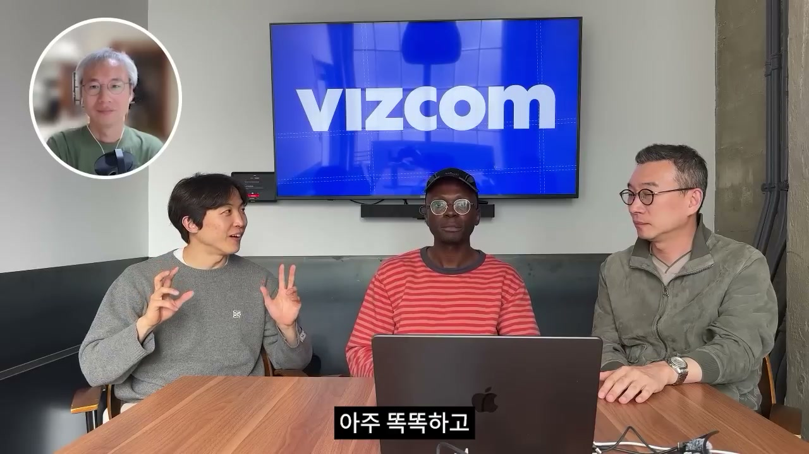
후반부의 첫 주제는 한국 인재가 글로벌 무대에서 더 과감해져야 한다는 메시지입니다. 노정석은 한국인은 충분히 똑똑하고 규율도 좋기 때문에, 스스로를 더 믿고 글로벌 맥락에서 용감해져야 한다고 말합니다. Jordan도 이에 동의하며, 대학 때 알던 친구들 중 지금 미국에서 일하는 한국인들이 많고, 처음에는 영어를 조금밖에 하지 못했지만 시간이 지나며 빠르게 잘하게 되었다고 설명합니다. 이는 영어와 문화 장벽이 절대적 장벽이 아니라, 시간이 지나며 극복 가능한 실전 적응의 문제라는 뜻입니다.
노정석은 한국에서 샌프란시스코로 오는 한국 창업자들을 만나면 꼭 도와 달라고 Jordan에게 부탁합니다. Jordan은 자신에게 연락하라며, 연결되는 데 매우 열려 있고 이런 일을 정말 좋아한다고 답합니다. 여기서 대화의 분위기는 단순한 조언을 넘어 실제 네트워크 연결로 바뀝니다. 글로벌 진출을 생각하는 창업자에게 가장 필요한 것은 추상적 조언보다, 현지에서 만날 수 있는 사람과 진짜 관계를 만드는 기회라는 점이 드러납니다.
김민석은 이 채널이 AI 엔지니어와 연구자 사이에서 유명하다고 말하며, VIZCOM이 채용 중이라면 한국 인재를 찾을 좋은 기회라고 덧붙입니다. Jordan은 VIZCOM이 현재 확실히 채용 중이라고 답합니다. 채용 범위는 소프트웨어 엔지니어, 제품 디자이너, 디자인 관련 인력, 여러 종류의 엔지니어링, 비즈니스 운영, 영업팀 구축 등으로 매우 넓습니다. 특히 한국이나 아시아에서 영업팀을 어떻게 만들지까지 언급한 점은, VIZCOM이 단순히 미국 중심 회사가 아니라 아시아 시장과 한국 인재를 실제 성장 전략 안에 넣고 있음을 보여줍니다.
Jordan은 연락 방법도 명확히 제시합니다. 관심 있는 사람은 jordan@vizcom.com으로 보내면 된다고 말합니다. 이 장면은 VIZCOM의 공개 채용 안내이면서, 동시에 한국 AI·디자인 인재에게 글로벌 AI 스타트업으로 직접 들어갈 수 있는 통로를 보여주는 순간입니다.
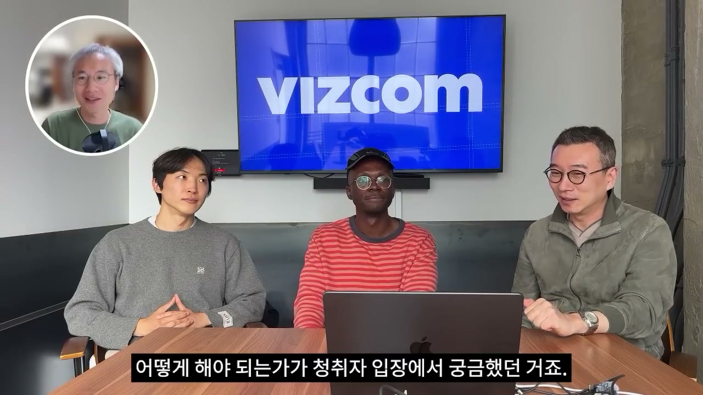
이어 최승준은 사람들이 샌프란시스코에 간다면 어디에 있어야 하고, 일반적으로 어떤 메뉴가 있는지 묻습니다. 김민석은 일반론에서 관광객처럼 VIZCOM을 방문하기는 어려울 것이라고 선을 긋습니다. 대신 Jordan에게 도움이 될 수 있는 개발자, 디자이너, 혹은 이 분야에 진정한 관심이 있는 사람이라면 진정성 있는 이야기를 가지고 연락했을 때 답장을 받을 수 있지 않겠느냐고 정리합니다. 중요한 것은 단순 방문이나 견학이 아니라, 서로에게 도움이 되는 맥락입니다.
노정석은 자신들이 Jordan과 촬영하는 이유도 Jordan이 한국에 대한 애정이 정말 높기 때문이라고 설명합니다. Jordan은 한국 창업자들이 그렇게 똑똑하고 괜찮고 엔지니어들도 좋은데 왜 더 큰 시장으로 나오지 않느냐는 이야기를 하며 많이 도와주겠다고 했습니다. 또한 노정석은 이번이 이미 두 번째 만남이라고 말합니다. 즉 이번 인터뷰는 처음 보는 낯선 창업자를 홍보하는 자리가 아니라, 한국과 글로벌 AI 생태계를 연결하려는 지속적 관계의 일부입니다.
최승준은 지금 대화가 일종의 메시지와 도발처럼 들린다고 말합니다. 사람들에게 샌프란시스코에 도전해 보라는 메시지를 주는 것 같고, 청취자 입장에서는 막막하게 SF에 갔을 때 어떻게 살아남아야 하는지가 궁금하다고 설명합니다. 이 질문은 자연스럽지만, 김민석은 오히려 반문하고 싶다고 답합니다. 그는 “답은 없다”는 반응에 동의하면서, 그 답은 자기 자신이 만들어야 하는 것이기 때문에 답을 찾으려는 태도 자체가 좋은 질문이 아니라고 말합니다.
노정석은 이것을 한국적인 방식이라고 짚습니다. 한국인으로서 무언가를 하려면 교과서나 모범 사례를 찾고, 그것을 따라 하려는 경향이 있다는 설명입니다. 그는 한국 문화가 절반은 일본적이고 절반은 미국적인 요소가 섞여 있다고 해석하며, 중국과는 확실히 다르다고 말합니다. Jordan은 이에 공감하면서 새로운 것을 시도하려는 의지가 중요하다고 덧붙입니다. 여기서 핵심은 SF에서 살아남는 정답이 따로 있는 것이 아니라, 불확실한 환경에서 스스로 답을 만들려는 태도입니다.
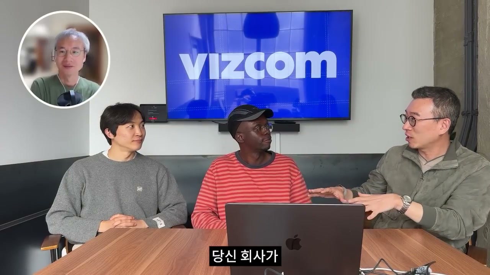
이후 대화는 Bay Area에서 느낀 낙관주의로 이어집니다. 김민석은 Jordan뿐 아니라 이곳 사람들에게 전반적으로 낙관주의가 많다고 말합니다. 한국에서는 어떤 일을 한다고 하면 “망하면 어떡해”, “왜 이렇게 하냐”, “잘 안 될 거야”라는 반응이 자주 나오지만, 이곳에서는 “어떻게 한 번 더 키워볼까”, “망해도 괜찮아”, “또 하면 되지”, “될 때까지 하자”라는 사고방식이 많다고 설명합니다. 그는 이를 파이를 키워서 나누어 먹자는 태도로 표현합니다.
최승준은 이 맥락에서 “꿈의 크기”에 대해 묻습니다. 전반부 대화에서 노정석이 이미 이곳에서는 꿈을 크게 키운다고 말했던 것을 이어받은 질문입니다. 노정석은 대화 초반에 Jordan의 회사가 5,000만 달러 투자를 받았다고 말했는데, 이는 원화로 약 800억 원이라고 설명합니다. 한국에서는 매우 큰돈이지만, Bay Area 스타트업 커뮤니티에서는 프리시드, 시드, 시리즈 A, 시리즈 B라는 단계가 있고, 한국에도 비슷한 구조는 있지만 숫자가 완전히 다르다고 말합니다.
노정석은 보통 이곳에서는 숫자에 0이 하나 더 붙는다고 표현합니다. 이는 단순히 환율이나 시장 규모의 차이가 아니라, 창업자가 상상하는 회사의 크기, 투자자가 감수하는 위험, 그리고 생태계가 기대하는 성장 속도 자체가 다르다는 뜻입니다. 그는 VIZCOM이 2020년에 회사를 시작했고 이미 약 5년이 지났으며, 많은 고통스러운 일도 있었을 것이라고 말합니다. 자금이 자동으로 확보된 것이 아니라, 첫 투자까지 많은 노력이 필요했을 것이라는 전제를 깔고 회사의 시작 이야기를 묻습니다.
이 장면은 후반부의 중심축 중 하나를 엽니다. VIZCOM이 800억 원 규모의 투자를 받은 스타트업이라는 사실만 보는 것이 아니라, 그 이전에 어떤 초기 신뢰, 어떤 커뮤니티, 어떤 투자자와의 만남이 있었는지를 되짚는 흐름입니다.
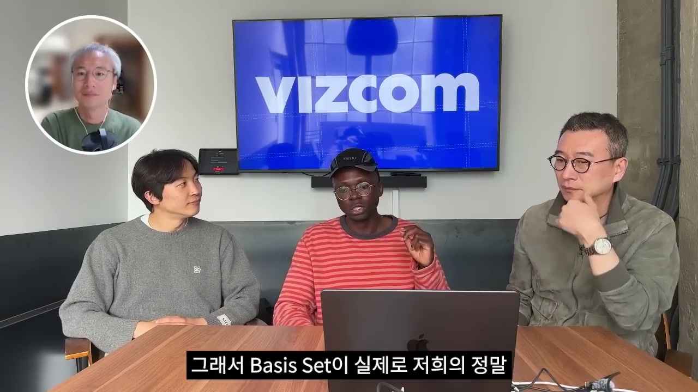
노정석은 회사의 시작부터 첫 투자 이야기까지 들려줄 수 있는지 묻고, Nat Friedman에게 투자받은 것도 언급합니다. 주변 패널들은 Nat Friedman이 GitHub Copilot을 만든 인물이고, AI Grant를 통해 많은 AI 스타트업을 발굴했으며, 현재는 Meta Superintelligence Lab에 소속되어 있다고 설명합니다. 노정석은 그가 시장에서 매우 중요한 인물이라고 평가합니다. 다만 Jordan은 Nat Friedman도 일부였지만, 실제 첫 투자에는 다른 중요한 흐름이 있었다고 설명합니다.
Jordan에 따르면 흥미로운 일이 일어난 계기는 Reddit 게시글이었습니다. VIZCOM은 Discord에서 커뮤니티를 키우기 시작했고, 그 과정에서 두 투자자 축이 생겼습니다. 하나는 Basis Set Ventures였고, 다른 하나는 Nat Friedman 쪽의 AI Grant였습니다. Jordan은 VIZCOM의 정말 첫 번째 자금은 Basis Set이 리드했고, 금액은 50만 달러였다고 말합니다. 이것이 VIZCOM의 첫 투자였습니다.
그 직후 Nat Friedman이 AI Grant라는 것을 들고 왔습니다. Jordan은 처음에는 “AI Grant?”라는 이름이 가짜처럼 들렸고, 사기인 줄 알았다고 회상합니다. 하지만 곧 진짜라는 것을 확인했고, 좋다고 생각해 참여하게 되었습니다. 이 대목은 AI 창업 초기 생태계의 비공식성, 빠른 속도, 그리고 당시에는 지금처럼 제도화되지 않았던 투자 흐름을 보여줍니다.
Basis Set의 Chang은 VIZCOM의 Discord 그룹이 성장하는 것을 보고 Jordan에게 이메일을 보냈습니다. 커피를 마시며 만나고 싶다는 내용이었습니다. Jordan은 노트북을 가져가 VIZCOM이 무엇을 하는지 보여주었고, 그림을 렌더링할 수 있다고 설명했습니다. Chang은 좋다고 반응했고, 다음 날 “이 정도로 시작해 드릴 수 있다”고 제안했습니다. Jordan은 그 제안을 받아들였고, 이후의 흐름은 지금 알려진 VIZCOM의 성장으로 이어졌습니다.
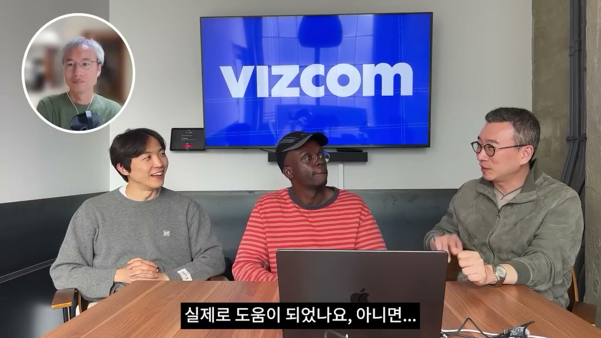
김민석은 AI Grant를 AI 회사들을 위한 YC처럼 느껴진다고 설명합니다. 특히 첫 배치에는 VIZCOM을 포함해 훌륭한 회사들이 많았다고 말합니다. Jordan은 AI Grant 경험이 정말 좋았고, 특히 첫 배치가 매우 진정성 있게 느껴졌다고 회상합니다. 모두가 아직 자기 아이디어의 초기 단계에 있었고, 자기만의 것을 찾아가려 하고 있었습니다.
Jordan은 그 환경에서 “우리 모두 정말 초기 단계이고, 모두 이걸 풀어내려고 하고 있구나”라는 공통 기반을 느꼈다고 말합니다. 그는 그곳이 큰 일이 벌어지는 최전선처럼 느껴져서 매우 멋졌다고 표현합니다. 장소도 특별했습니다. 화려한 컨퍼런스홀이 아니라 샌프란시스코의 어느 무작위 지하실에서 진행되었습니다. 이 점은 AI 스타트업의 초기 에너지가 권위 있는 무대보다 커뮤니티, 실험, 밀도 높은 만남에서 나온다는 것을 잘 보여줍니다.
김민석과 노정석은 AI Grant에서 다른 창업자나 프로그램으로부터 무엇을 배웠는지, 다음 투자 라운드를 확보하는 데 실제로 도움이 되었는지 묻습니다. Jordan이 가장 먼저 든 교훈은 아이디어를 피벗하는 것을 두려워하지 말라는 것입니다. 마음을 바꿔도 괜찮다는 말입니다. AI Grant 배치에 함께 있던 Michael과 Arvid는 당시 CAD AI 도구를 하고 있었지만, 배치가 끝날 무렵에는 코딩 도구를 하겠다고 방향을 바꾸었습니다. 지금은 그들이 Cursor에 있다는 점이 이 피벗의 중요성을 보여주는 사례로 제시됩니다.
Jordan은 그 순간 큰 변화라고 느꼈다고 말합니다. 만약 그들이 너무 고집스럽게 “나는 CAD를 만들어야만 해”라고 했다면 어떻게 되었을까를 돌아보게 된 것입니다. 그들은 잘 안 되면 아이디어를 바꿀 수 있다고 받아들였습니다. 최승준은 Runway도 처음에는 도구로 시작했지만 나중에는 모델을 개발하는 쪽으로 바뀌었다고 말하고, Jordan은 정확하다고 답합니다. 이 대화는 AI 스타트업에서 피벗이 단순한 방향 수정이 아니라, 시장과 기술의 변화를 읽는 핵심 능력이라는 점을 강조합니다.
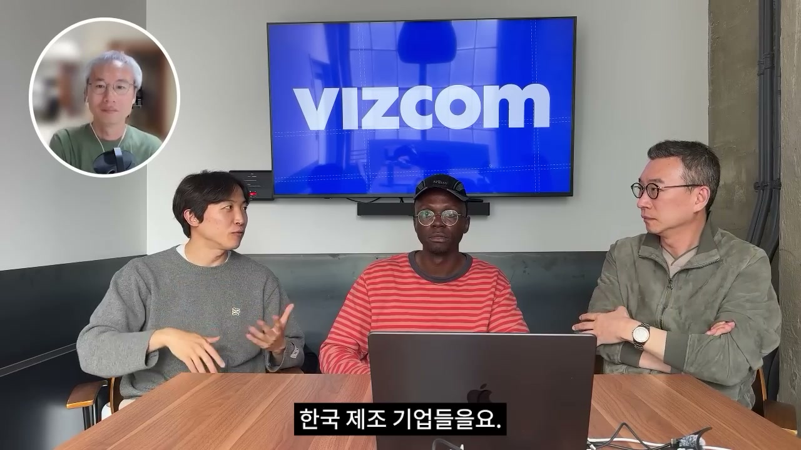
Runway 이야기가 모델 개발로 이어지자, 노정석은 VIZCOM도 자체 모델을 만들 계획이 있는지 묻습니다. Jordan은 물론이며 지금 그 작업을 하고 있다고 답합니다. 다만 그가 말하는 자체 모델은 단순히 “조금 더 나은 또 하나의 이미지 모델”이 아닙니다. 그는 VIZCOM이 그 모델로 무엇을 해결하고 싶은지, 그것이 회사에 실제로 어떤 의미인지 이해하려고 하고 있다고 설명합니다.
Jordan은 근본적으로 새로운 무언가를 만들려는 것이라고 말합니다. 그리고 그것은 하나의 모달리티에만 국한되지도 않습니다. 아직 자세히 말하기는 어렵지만, 바로 이런 이유로 VIZCOM이 채용을 하고 있다고 강조합니다. 즉 채용의 목적은 단순히 현재 제품을 운영할 인력을 늘리는 것이 아니라, VIZCOM이 다음 단계에서 어떤 AI 모델 회사가 될 것인지 설계하기 위한 것입니다.
김민석은 한국 대기업에서 일하는 AI 프로슈머, 디자이너, 의사결정권자들을 염두에 두고, VIZCOM이 작업 중인 제품의 청사진과 한국 제조 기업들을 어떻게 도울 수 있는지 알려 달라고 요청합니다. Jordan은 VIZCOM이 많은 대기업과 일하고 있다고 답합니다. 예로 Hyundai와 Namyang 같은 물리적 제품을 만드는 회사들이 언급됩니다. 이 회사들의 디자이너들이 시간을 훨씬 더 잘 활용하도록 돕는 것이 VIZCOM의 역할입니다.
Jordan은 이제 예전처럼 프로토타이핑에 많은 시간을 낭비하지 않아도 된다고 말합니다. 몇 달이 아니라 며칠 안에 프로토타입을 만들 수 있습니다. 며칠 전 GM CEO가 VIZCOM에 대해 이야기하며, 몇 주 걸리던 일이 몇 시간으로 줄었다고 말했다는 사례도 나옵니다. 이는 단순 생산성 개선이 아니라, 디자인 조직이 아이디어를 검증하고 논의하는 속도 자체가 바뀌는 변화입니다.
Jordan은 대기업 내부에 스스로 추진하는 AI 이니셔티브가 있어야 한다고 봅니다. 조직으로서 “우리의 AI 전략은 무엇인가”를 묻고, 많은 회사가 이미 그렇게 하고 있다고 설명합니다. 그런 회사들이 VIZCOM 같은 방식에서 가장 큰 성공을 거둘 가능성이 큽니다. 디자이너의 속도를 높이고, 디자이너가 아닌 사람들도 그날의 논의에 참여할 수 있도록 만드는 조직이 VIZCOM의 가치를 가장 크게 누릴 수 있습니다.
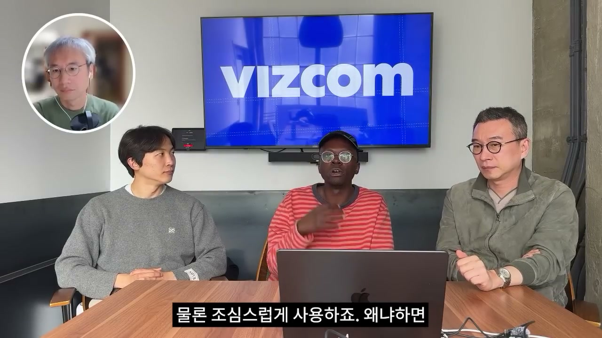
김민석은 VIZCOM이 커뮤니티에 대해 많이 이야기했고, 사용자 측면에 집중하며 제품을 잘 사용하도록 돕는다는 점을 짚습니다. 그는 이것이 분명 제품 주도 성장이고 상향식 전략이라고 말합니다. 이어 한국 대학의 산업디자이너나 학생들이 이 제품에 어떻게 접근하고 사용하는지 묻습니다.
Jordan은 VIZCOM을 모든 학교에 무료로 제공한다고 말합니다. 모든 학교라는 표현을 반복하며, ArtCenter, CCS, Hongik University 같은 학교를 예로 듭니다. VIZCOM이 이렇게 하는 이유는 학생일 때 워크플로가 매우 유연하기 때문입니다. 학생들은 다양한 것을 시도하고, 도구에 대한 고정관념도 상대적으로 적습니다.
그 학생들이 인턴십이나 일을 얻게 되면, 자신이 쓰던 도구를 함께 가져갑니다. 그러면 VIZCOM이 대기업 안으로 퍼져 들어갑니다. 이는 매우 전형적인 상향식 소프트웨어 확산 전략입니다. 학교와 커뮤니티에서 시작된 사용 경험이 개인의 업무 습관이 되고, 그 개인이 조직에 들어가면서 도구가 기업 내부로 침투합니다.
하지만 Jordan은 AI를 무조건적으로 받아들이자는 입장만 말하지 않습니다. 학생들도 조심스럽게 사용한다고 설명합니다. 그 이유는 AI 이전의 기본기를 잃고 싶지 않기 때문입니다. Jordan은 자신들의 세대가 AI 이전에 배웠기 때문에 특별하다고 봅니다. 새로운 세대는 특정한 기본기를 배울 필요조차 없을 수 있는데, 이것은 좋을 수도 있고 나쁠 수도 있습니다. 지금은 그 중간 지점에 놓여 있다는 진단입니다.
Jordan은 학생들 사이에서도 반응이 갈린다고 말합니다. 어떤 학생들은 AI를 매우 잘 받아들이지만, 어떤 학생들은 AI에 매우 반대합니다. 그는 AI가 Silicon Valley와 테크 업계 바깥에서는 정말 나쁜 여론을 겪었다고 보고, 많은 사람이 그것을 잘 모르는 것 같다고 말합니다. 실제로 많은 서구권 학생들이 AI에 반대한다고 덧붙입니다. 노정석도 Stanford 졸업식에서 어떤 인물이 말하려 할 때 사람들이 걸어 나갔다는 트윗을 봤다고 언급하고, Jordan은 이런 일들이 아주 흔하다고 답합니다.
대화는 Silicon Valley AI 창업자 씬의 판도로 넘어갑니다. 노정석은 SpaceX IPO, Anthropic, OpenAI의 기업가치, 그리고 Matt와 자신이 만난 창업자들이 말하는 숫자와 조달 금액이 정말 높다고 말합니다. 그는 이런 열기가 Bay Area 전반에 퍼져 있는 것 같다고 보고, 전반적 판도에 대해 Jordan의 생각을 묻습니다. 특히 모든 기업가치가 정당화된다고 보는지 질문합니다.
Jordan은 일부는 분명히 그렇다고 답합니다. 특히 Anthropic을 예로 듭니다. 그는 이들이 지능형 서비스를 만들어냈다고 보고, 그것을 말 그대로 전기와 같다고 비유합니다. 다만 물리적 전기가 아니라 마음을 위한 전기입니다. 그런 것이 없다는 것은 앞으로 정말 이상하게 느껴질 것이라고 말합니다.
Jordan은 특정 서비스가 사라졌을 때 너무 슬펐다고 말합니다. 자막에는 “Fable 5”로 표기된 서비스가 사라졌을 때, 자신에게서 정말 중요한 무언가를 빼앗아 간 것 같았다고 표현합니다. 그는 그것을 식기세척기를 빼앗긴 것에 비유합니다. 이 비유는 AI 서비스가 단순히 재미있는 도구가 아니라, 일상과 업무의 기본 인프라처럼 느껴질 수 있다는 주장입니다.
이 관점에서 Jordan은 AI 기업가치가 엄청나게 가치 있을 수 있다고 봅니다. 경제를 자동화할 수 있다면 그것은 거대하고 말도 안 되는 돌파구이기 때문입니다. 기존의 매출이나 비용 절감만으로 계산하기 어려운, 노동과 지능의 구조 자체를 바꾸는 변화라는 뜻입니다.
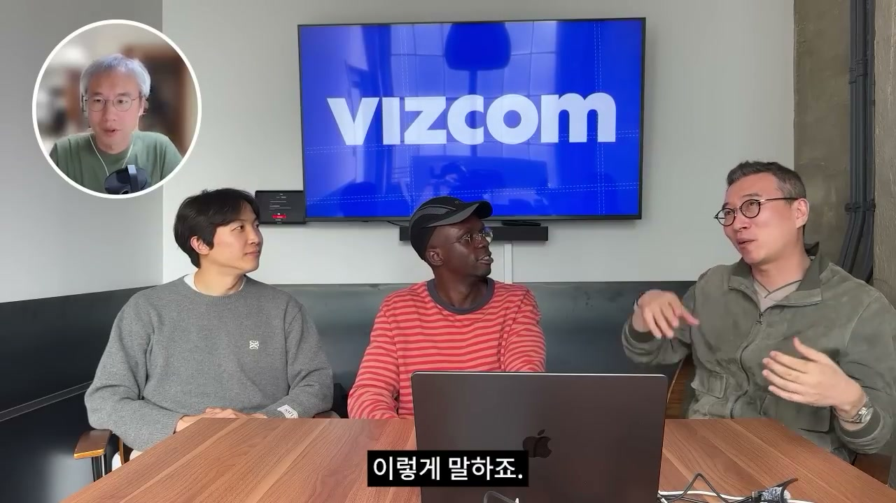
Jordan은 Qatar를 예로 들어 경제 자동화의 상상력을 설명합니다. 그는 Qatar의 노동력 대부분이 이주 노동자들에 의해 수행되고, 일반 시민은 적은 비율이며, 많은 사람이 50세가 되면 은퇴할 수 있다고 말합니다. 그 이유는 많은 이주 노동자들이 경제를 떠받쳐 연금을 가능하게 하기 때문입니다. 그는 AI 에이전트들이 경제의 많은 부분을 수행하게 되면, 이와 비슷한 일이 다른 지역에서도 벌어질 수 있다고 봅니다.
그렇게 되면 상한은 무제한입니다. 현재 기업가치를 넘어서는 수준일 수 있습니다. Jordan은 사람들이 요즘 탈노동 경제학, 즉 일이 거의 선택 사항이 되는 세계를 이야기하는 흐름을 언급합니다. 그런 미래가 가능하다면 현재의 높은 기업가치는 충분히 정당화될 수 있습니다. 그는 2030년이나 2035년쯤에는 오히려 지금의 가치가 거의 저평가되어 있었다고 말할 수도 있다고 봅니다.
Jordan은 Bay Area 사람들이 정말 이런 미래를 믿고 있고, 자신들이 그것을 만들고 있다고 생각한다고 말합니다. 물론 조금 무섭기도 하지만, 그것이 바로 큰 변화의 본질이라고 설명합니다. 노정석은 그 관점에 어느 정도 동의하면서도, 나이 든 세대의 많은 사람들은 “그 회사의 매출은 그렇게 높지 않은데”라고 말한다고 지적합니다. 이것은 전통적 매출 중심의 기업가치 평가와, AI 인프라·지능 자동화 중심의 미래 가치 평가가 충돌하는 지점입니다.
Jordan은 물론 아주 큰 범주의 스타트업들이 있고, 그중에는 LARPing이라고 부를 수 있는 회사들도 있다고 인정합니다. LARPing은 실제로 그 문제에 관심이 있는 것이 아니라, 모두가 하니까 따라 하는 것을 뜻합니다. 그는 이런 회사들이 많이 있으며, 당연히 왔다가 사라질 것이라고 봅니다. 모든 기술 웨이브마다 이런 버전이 있었고, 모바일 인터넷 때도 마찬가지였다는 설명입니다. 노정석은 앞으로 많은 걸러내기 단계가 있을 것이며 좋은 회사는 떠오르고 나쁜 회사는 사라질 것이라고 정리합니다. Jordan은 노이즈가 많고, 그 노이즈 속에서 시그널을 찾는 것이 핵심이라고 답합니다.
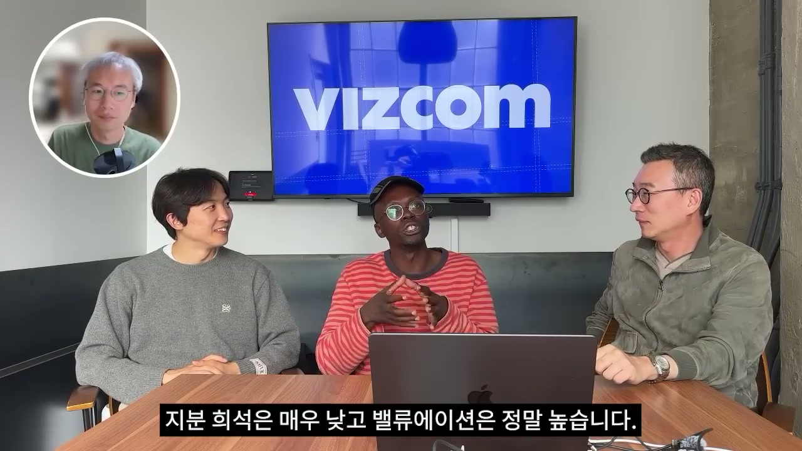
노정석은 프리시드, 시드, 시리즈 A, 시리즈 B 같은 회사 단계에 대해 몇 가지 데이터 포인트를 줄 수 있는지 묻습니다. 한국에서도 어떤 매출에 도달하면 어느 정도 밸류에이션을 받고 얼마를 조달할 수 있다는 기준을 보기 때문에, Silicon Valley 스타트업의 밸류에이션 체계를 대략 설명해 달라는 질문입니다. Jordan은 상황에 따라 정말 다르다고 전제합니다. 요즘은 너무 무작위적이라 일반화하기 어렵다고 말합니다.
그럼에도 Jordan은 몇 가지 사례를 듭니다. 최근 본 사례 중 하나는 Mechanize라는 팀이 900만 달러, 약 126억 원을 조달했고, 투자 후 밸류에이션이 5억 달러, 약 7,000억 원이었다는 것입니다. 그는 900만 달러를 5억 달러 포스트머니 밸류에이션에 조달했다는 것은 아주 좋은 조건이라고 말합니다. 지분 희석은 매우 낮고, 밸류에이션은 정말 높습니다. 이런 일이 현재 분명히 벌어지고 있다고 설명합니다.
또 다른 사례로 순수하게 아이디어만으로 40억 달러 밸류에이션을 받은 경우도 봤다고 말합니다. 다만 그는 그들의 배경 때문에 그런 일이 가능하다고 봅니다. 동시에 그는 이런 밸류에이션이 어떤 회사가 좋은지 나쁜지를 보여주는 좋은 지표라고 생각하지 않습니다. 결국 중요한 것은 창업자와 문제가 무엇인지입니다. 높은 밸류에이션은 현재 환경이 얼마나 미쳐 있는지를 반영할 뿐, 회사의 본질적 품질을 보증하지는 않습니다.
김민석은 요즘은 상승과 하락이 아니라, 상승과 상승이 느껴진다고 말합니다. 노정석은 이런 높은 단계가 얼마나 오래 지속될지, 2년이나 3년 정도일지 묻습니다. Jordan은 더 오래 갈 것 같다고 답합니다. 예상보다 더 오래 갈 수 있고, 어쩌면 이것이 새로운 기준일 수도 있다고 말합니다. 다만 자신은 미래 예측을 정말 못한다고 덧붙여, 확신보다 관찰과 가능성의 형태로 답합니다.
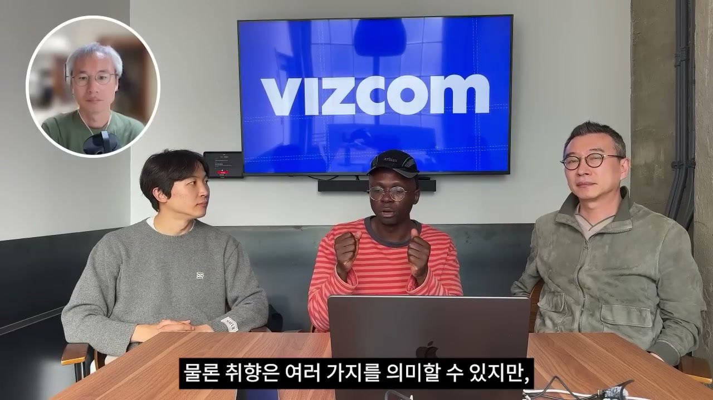
김민석은 Jordan이 여러 산업의 산업디자이너들을 만나 보았고, 그들의 역할이 어떻게 변해 왔는지도 보았으니, 미래 디자이너의 역할과 직무 설명이 어떻게 바뀔지 묻습니다. Jordan은 AI 때문에 이것이 매우 흥미롭다고 답합니다. 그는 AI가 인간적 손길의 중요성을 정말 증폭시킨다고 봅니다. 이유는 반복적이고 지루한 작업들이 많이 사라지기 때문입니다.
그 결과 디자이너는 “어떻게 좋아 보이게 만들까”보다 “왜 이게 좋아 보일까”에 더 집중하게 됩니다. 실제 제작 과정의 많은 부분이 자동화되면, 디자이너의 핵심 역량은 표면을 잘 다듬는 기술만이 아닙니다. 무엇이 좋은지 알아보는 취향, 왜 특정 청중이 그것을 가치 있게 느끼는지 이해하는 판단, 시그널과 노이즈를 구분하는 능력이 더 중요해집니다. Jordan은 좋은 취향을 갖는 것이 극도로 중요해진다고 강조합니다.
그가 말하는 취향은 단순히 예쁜 것을 고르는 감각이 아닙니다. 중요한 것은 시그널과 노이즈를 구분할 수 있고, 내가 디자인하려는 청중이 왜 그것을 가치 있게 느낄지 아는 것입니다. 따라서 판단 중심의 도구와 역량이 점점 더 중요해집니다. 디자인 팀 안에서 무드보드를 큐레이션하는 일을 맡은 사람이 생길 수도 있습니다. 데이터 큐레이션도 중요해집니다. 모델들이 거기서 배울 수 있기 때문입니다.
즉 앞으로의 디자이너는 모델이 학습할 이미지와 레퍼런스를 어떻게 고르고 정리할지 아는 사람이 됩니다. 이미지 큐레이션 능력 자체가 직무 역량이 됩니다. 이런 새로운 역량들이 형성되고 있다는 점을 Jordan은 매우 흥미롭게 봅니다. 김민석은 VIZCOM의 제품이 디자이너들이 자신의 취향을 키우고, 많은 지루한 작업을 자동화해 영향력에 집중하도록 돕는 것이라고 정리하고, Jordan은 정확하다고 답합니다.
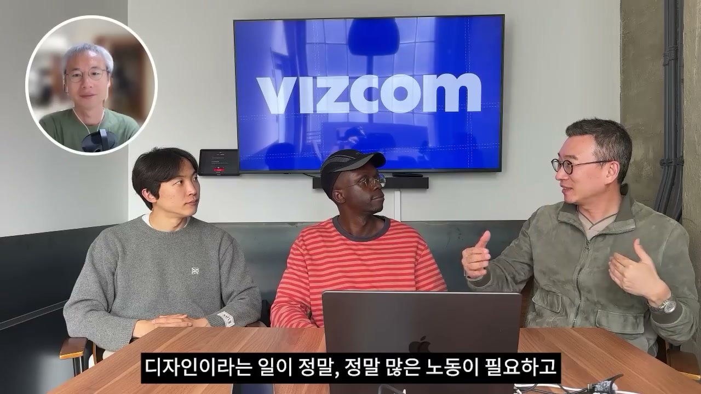
최승준은 관련 질문을 한국어로 해 보겠다고 말합니다. 그는 Jordan의 작업에는 어떤 긴장이 있다고 느꼈다고 설명합니다. Jordan은 산업디자인 배경을 가지고 있고, 반복 과정과 창작 과정에서 반복적인 것이 매우 중요하다는 것을 몸으로 이해하는 사람처럼 보입니다. 그런데 VIZCOM의 제품은 바로 그 반복 과정을 압축합니다. 그래서 창작 과정 안에서 약간의 긴장이 있는 것처럼 보인다는 질문입니다.
최승준은 AI가 자꾸 위임하고 자동화하는 상황에서, 보호하고 싶은 것이 있는지 묻습니다. 반복적이고 지루한 일이나 잡일은 위임한다고 말하지만, 사실 그 반복 자체가 창작 과정의 일부일 수도 있습니다. 그렇다면 현재의 위임 상태에서 무엇을 지켜야 하는지, 아니면 흐름을 완전히 바꿔야 하는지, 조류를 따라가야 하는지 고민이 있지 않겠느냐는 질문입니다. 이는 단순한 기능 질문이 아니라, 창작의 본질과 도구의 역할에 관한 철학적 질문입니다.
노정석은 이 질문을 영어로 다시 설명합니다. 디자인이라는 일은 정말 많은 노동과 시간이 필요한데, VIZCOM이 디자이너에게 제공하는 것은 그 과정을 압축해 매우 빠르게 만드는 것입니다. 그래서 창작 과정 안에서는 모순처럼 보입니다. AI는 그 일을 압축된 방식으로 해냅니다. 따라서 질문의 핵심은 이 두 가지 모순을 어떻게 관리하느냐입니다.
Jordan은 질문을 이해했다고 답한 뒤, VIZCOM이 하려는 것은 반복을 떠넘기는 것이 아니라고 말합니다. 그는 창작 과정 자체를 말하는 것이라고 설명합니다. 실제로 창의적이 되는 것은 여전히 사람에게 달려 있습니다. 그것은 그림 그리기로 귀결되고, 자신의 생각을 어떻게 전달하느냐로 이어집니다. 다만 창의성을 표현할 수 있는 경로가 달라졌을 뿐입니다.
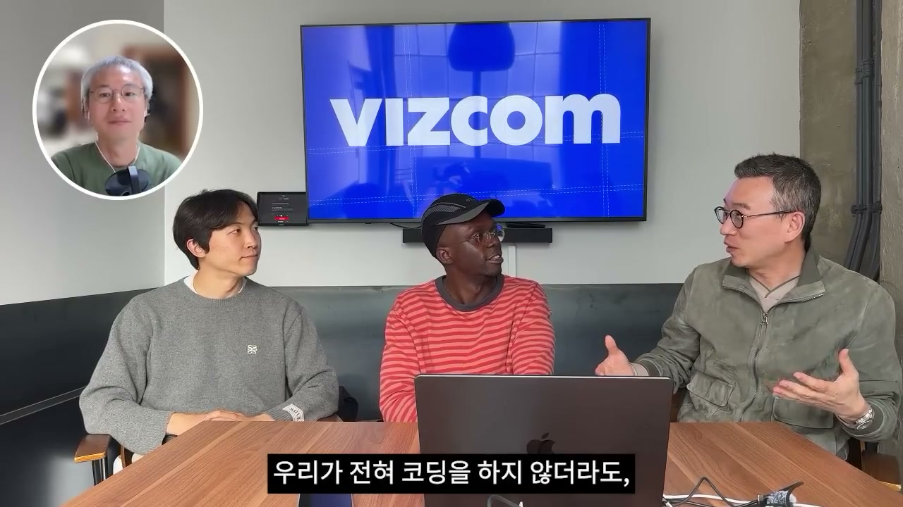
Jordan은 과거의 창의성 정의에는 특정한 실천들이 붙어 있었을 수 있다고 설명합니다. 예를 들어 그림을 직접 그리고, 글을 쓰고, 손으로 반복해 보는 일이 창의성의 일부처럼 여겨졌습니다. 하지만 이제는 새로운 실천들이 “창의성”이라는 단어에 붙고 있습니다. 기술 때문에 창의성은 더 이상 단순히 그림을 그리거나 글을 쓰는 것만을 뜻하지 않습니다. 더 많은 것을 의미하게 되었습니다.
그는 VIZCOM 같은 도구를 통해 창의성이라는 단어에 더 많은 정의가 덧붙고 있다고 봅니다. 창의성은 사라지는 것이 아니라 표현되는 방식이 바뀌고 있습니다. 마치 언어가 시간이 지나며 진화하듯이, 한국어와 영어가 변하듯이, 디자인에서도 같은 일이 일어나고 있다는 설명입니다. 도구가 달라지면 창의성을 수행하는 방식도 달라지고, 그에 따라 창의성을 둘러싼 사회적 의미도 바뀝니다.
노정석은 전날 나눴던 대화를 떠올립니다. 우리가 전혀 코딩을 하지 않더라도 엔지니어링은 여전히 필요하다는 이야기입니다. 영어로 코딩을 하더라도 엔지니어링은 여전히 남아 있습니다. 이 비유는 디자인에도 그대로 적용됩니다. AI가 손작업을 줄이고 경로를 바꾸더라도, 디자인적 판단과 창의적 의사결정은 여전히 남아 있습니다.
이 장면은 인터뷰의 가장 중요한 철학적 결론 중 하나입니다. VIZCOM은 반복을 없애는 도구가 아니라, 반복을 다른 층위로 이동시키는 도구입니다. 손의 반복이 줄어드는 대신, 판단의 반복, 선택의 반복, 취향의 반복, 목적을 분명히 하는 반복이 더 중요해집니다. 창의성의 본질은 사라지지 않고, 실천 방식만 바뀌고 있습니다.
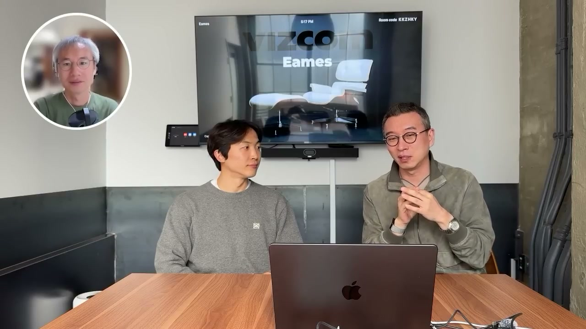
Jordan은 초대해 주셔서 감사하다고 말하고, 승준님도 만나 반가웠으며 자신이 한국에 가면 같이 만나자고 인사합니다. 이후 노정석은 Jordan을 보내고, 민석님과 세 사람이 마무리하겠다고 말합니다. 그는 원래 이런 녹화를 여러 개 하려고 했지만, 프론티어 리서처들은 당연히 말을 못 하고, 벤처캐피탈리스트나 창업가들도 공개적으로 말하기 어려운 경우가 많다고 설명합니다. 이는 AI 최전선의 정보가 공개 인터뷰로 쉽게 나오지 않는다는 현실을 보여줍니다.
노정석은 7월 초 ICML이라는 학회가 한국에 있다고 말합니다. 7월 5일부터 약 12일까지 좋은 사람들이 한국에 많이 방문할 것 같다고 설명합니다. 그 기간 동안 많은 파티가 열리고, 미국에서 오는 회사들까지 코엑스 근처의 카페와 음식점을 빌려 작은 파티들을 열고 있다고 말합니다. 최승준은 놓치기 아까운 타이밍이라고 반응합니다.
노정석은 한국에 있는 AI 엔지니어, AI 리서처, 이미 창업한 사람들에게 이 시기가 중요하다고 말합니다. 한국에서 펀딩을 많이 받았더라도 이쪽 동네의 밸류에이션 체계가 워낙 다르다는 점도 강조합니다. 특히 한국에 관심 있어 하는 회사들은 칩 회사, 소프트웨어 오케스트레이션, 소프트웨어 인프라, GPU 오케스트레이션, VLM, SLM 같은 분야에 관심이 많다고 봅니다. 반면 상대적으로 모델 생성 자체에는 별로 관심이 없어 보인다고 말합니다.
김민석은 그들이 모델 생성은 끝난 문제라고 보고 있는 것 같다고 정리합니다. 최승준은 “끝난 문제”라는 것이 따라잡기 어렵다는 뜻인지 묻습니다. 노정석은 맞다고 답합니다. 김민석은 방법론은 공개되었지만, 그 방법론을 따라 하기 위한 컴퓨팅 자원, 데이터, 인력 측면에서 그 게임판에 들어올 수 있는 플레이어가 몇 안 된다고 설명합니다. 이는 한국이 모든 영역을 다 따라잡으려 하기보다, 어디서 승부할 수 있는지를 냉정하게 봐야 한다는 시사점으로 이어집니다.
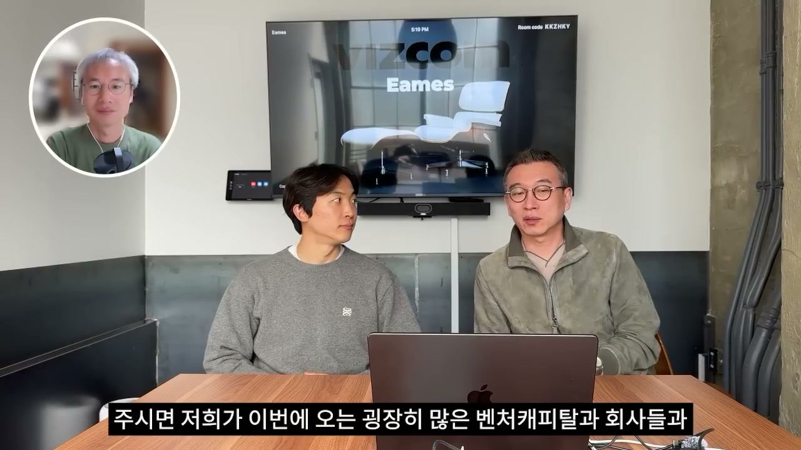
노정석은 또 하나 굉장히 크게 남은 분야가 AI 에이전트 서비스라고 말합니다. 무언가 완전한 형태의 소비자 서비스가 나오기 전이라고 보는 것입니다. 사람들은 ChatGPT나 Claude가 모든 것을 끝냈다고 생각하지만, 그는 전혀 그렇게 보지 않는다고 말합니다. 이제 겨우 시작이라고 봅니다. 이 말은 생성 모델 자체의 경쟁은 소수 대형 플레이어 중심으로 굳어질 수 있지만, 그 위에서 어떤 소비자 경험과 에이전트 서비스가 만들어질지는 아직 열려 있다는 뜻입니다.
노정석은 현지 사람들에게 한국을 팔면서 하는 이야기가 있다고 말합니다. 만약 그런 소비자 비즈니스의 원형이 탄생한다면, 그곳은 한국일 가능성이 크다는 주장입니다. 김민석도 실제로 중국이나 한국을 많이 관찰하고 있는 것 같다고 말합니다. 특히 그런 방향에 민감한 사람들은 아시아의 소비자 행동, 속도, 모바일 문화, 콘텐츠 소비 방식, 커뮤니티 반응을 중요하게 보고 있다는 뜻입니다.
노정석은 AI Frontier의 이메일을 하나 만들어 둘 것이고, 거기로 연락하면 이번에 오는 많은 벤처캐피탈과 회사들과 연결해 보겠다고 말합니다. 이미 많은 미팅을 했고 네트워크를 잘 갖고 있으니, 연결을 통해 어떤 딜들이 이루어지는지 볼 수 있으면 좋겠다고 설명합니다. 이는 단순한 방송 마무리가 아니라, 한국 AI 커뮤니티가 글로벌 투자자와 기업을 만날 수 있는 실질적 제안입니다.
최승준은 매우 흥미롭다고 말하며, 노정석에게 잘 돌아오고 한국에서 보자고 인사합니다. 민석님에게도 계속 추진해 달라고 말합니다. 노정석은 이 정도에서 마무리하겠다고 하고, 인터뷰는 끝납니다. 후반부 전체는 VIZCOM 한 회사의 성장 비밀을 넘어, 한국 AI 인재와 창업자가 글로벌 AI 생태계에서 어디를 노려야 하는지에 대한 전략적 대화로 마무리됩니다.
“한국인으로서 우리는 충분히 똑똑하고, 규율도 좋습니다.”
“자신감을 갖고 글로벌 맥락에서 더 용감해져야 합니다.”
“저에게 연락해 주세요. 저는 연결되는 데 매우 열려 있습니다.”
“VIZCOM이 관광지가 될 수는 없습니다.”
“답은 자기가 만들어야 하는 것입니다.”
“무언가를 하려면 교과서를 찾으려는 것은 매우 한국적인 방식입니다.”
“여기는 망해도 괜찮아, 또 하면 되지라는 사고방식이 많습니다.”
“여기서는 숫자에 0이 하나 더 붙어 있습니다.”
“처음에는 AI Grant가 가짜처럼 들렸습니다.”
“아이디어를 피벗하는 것을 두려워하지 말라는 것을 배웠습니다.”
“단순히 더 나은 이미지 모델이 아니라, 근본적으로 새로운 무언가를 만들려는 것입니다.”
“몇 달이 아니라 며칠 안에 프로토타입을 만들 수 있습니다.”
“모든 학교에 VIZCOM을 무료로 제공합니다.”
“AI 이전의 기본기를 잃고 싶지는 않습니다.”
“지능형 서비스는 마음을 위한 전기와 같습니다.”
“노이즈가 많고, 그 속에서 시그널을 찾는 것입니다.”
“밸류에이션은 좋은 회사인지 나쁜 회사인지 보여주는 좋은 지표가 아닙니다.”
“AI는 인간적 손길의 중요성을 증폭시킵니다.”
“디자이너는 왜 이것이 좋아 보이는지에 더 집중하게 됩니다.”
“창의적인 것은 여전히 사람에게 달려 있습니다.”
“창의성을 표현할 수 있는 경로가 달라졌을 뿐입니다.”
“ChatGPT나 Claude가 모든 걸 끝냈다고 보지 않습니다. 이제 겨우 시작입니다.”
이번 2편의 핵심은 VIZCOM의 성장 비밀이 단순히 좋은 AI 디자인 도구를 만든 데 있지 않다는 점입니다. VIZCOM은 커뮤니티에서 시작했고, Discord와 Reddit의 초기 반응을 통해 투자자에게 발견되었으며, Basis Set의 50만 달러 첫 투자와 AI Grant라는 초기 AI 창업자 네트워크를 거치며 성장했습니다. 이 과정에서 중요한 것은 화려한 계획서보다 실제 사용자의 반응, 진정성 있는 커뮤니티, 그리고 피벗을 두려워하지 않는 태도였습니다.
한국 창업자와 인재에게 주는 메시지도 분명합니다. 능력은 이미 충분하지만, 더 큰 시장에서 더 큰 꿈을 꾸고, 정답을 기다리는 대신 스스로 답을 만들어야 합니다. 샌프란시스코에서 살아남는 법은 메뉴얼로 주어지지 않습니다. Jordan과 같은 현지 창업자에게도 관광객처럼 다가가는 것이 아니라, 서로에게 도움이 되는 진정한 이야기와 문제의식을 가지고 연결되어야 합니다.
VIZCOM의 제품 전략은 대기업과 학생, 커뮤니티를 모두 겨냥합니다. 대기업에서는 프로토타이핑 시간을 몇 달에서 며칠, 몇 주에서 몇 시간으로 줄이고, 디자이너뿐 아니라 더 많은 사람이 디자인 논의에 참여하게 만듭니다. 학교에는 무료로 제공해 학생의 유연한 워크플로 안으로 들어가고, 그 학생들이 인턴십과 직장으로 이동하면서 도구가 대기업 내부로 확산됩니다. 이는 전형적인 제품 주도 성장과 상향식 확산 전략입니다.
AI가 디자이너의 역할을 대체한다기보다, 디자이너에게 요구되는 역량을 바꾸고 있다는 점도 중요합니다. 반복적 작업은 줄어들지만, 취향, 판단, 큐레이션, 시그널과 노이즈를 구분하는 능력은 더 중요해집니다. 창의성은 사라지지 않습니다. 다만 그림 그리기, 글쓰기, 손작업 같은 과거의 실천에만 묶여 있던 창의성의 정의가 바뀌고 있습니다. 기술은 창의성을 없애는 것이 아니라, 창의성이 표현되는 경로를 바꾸고 있습니다.
AI 밸류에이션과 Bay Area 열기에 대해서는 양면적 판단이 제시됩니다. Anthropic 같은 일부 기업의 가치는 지능형 서비스가 마음의 전기처럼 될 수 있다는 관점에서 정당화될 수 있습니다. 하지만 동시에 LARPing처럼 모두가 하니까 따라 하는 회사들도 많고, 앞으로 강한 필터링이 일어날 것입니다. 밸류에이션은 환경의 과열을 보여줄 수는 있지만, 좋은 회사인지 판단하는 핵심 지표는 아닙니다. 결국 창업자와 문제가 중요합니다.
마지막으로 한국 AI 생태계에는 여전히 큰 기회가 있습니다. 모델 생성 자체는 소수 대형 플레이어의 게임으로 굳어졌다고 볼 수 있지만, AI 에이전트 서비스와 소비자 비즈니스의 원형은 아직 열려 있습니다. 노정석은 그 원형이 한국에서 탄생할 수 있다고 보고, ICML을 계기로 한국에 오는 글로벌 VC와 회사들을 한국 창업자·연구자·엔지니어와 연결하려 합니다. 이 후반부의 결론은 VIZCOM의 사례를 넘어섭니다. 한국이 글로벌 AI 판에서 할 수 있는 일은 여전히 많고, 중요한 것은 지금 더 큰 판에 직접 들어가 실험하고 연결되는 것입니다.
댓글
GitHub 이슈 기반 댓글 시스템입니다.